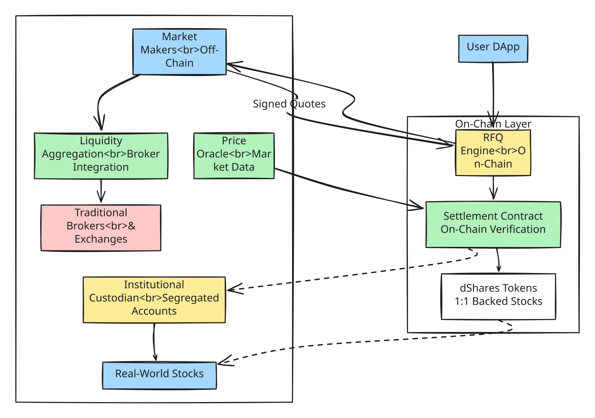

3.2 Protocol Mechanism

Execution Layer Fundamentals
The Deshare protocol unequivocally functions as the foundational, non-custodial execution layer for practically all newly minted on-chain stock assets. It is natively engineered entirely from scratch to robustly facilitate strictly secure, fundamentally transparent, and highly efficient capital asset trading by rigorously leveraging a profoundly optimized request-for-quote (RFQ) consensus model.
The Request-for-Quote (RFQ) Model
At the beating mathematical heart of the Deshare trading mechanism lies the heavily integrated RFQ paradigm. This actively promotes fair retail block pricing exclusively through high-frequency competitive algorithmic bidding successfully executed amongst heavily vetted institutional-grade market makers—tactically eliminating almost all MEV (Miner Extractable Value) vulnerabilities and viciously combating front-running bot risks.
- Market Maker Competition: When a user initiates a discrete trade intention on the localized UI interface, our backend infrastructure securely broadcasts an encrypted RFQ message directly to a rigorous, low-latency network of pre-approved, well-capitalized market makers. These independent actors then immediately compute and compete aggressively to definitively provide the absolute best possible binding bid or ask price.
- Execution Certainty Analytics: This nuanced model categorically helps institutional and retail actors alike in predictably achieving consistently superior execution spread prices frequently far better compared to a rudimentary AMM pool or an easily manipulated traditional EVM order book. By structurally tapping immediately into fundamentally deeper private liquidity pools, market price impact curves are profoundly flattened.
Immutable Cryptographic Logic
- Cryptographically Signed Escrow Quotes: Every active quote computationally submitted by a certified market maker is unconditionally signed immediately using their uniquely corresponding secure ECDSA private key. This exact elliptic-curve signature functionally acts as a mathematically unforgeable digital proof guaranteeing the definitive origin and the specific, immutable transactional terms (precise asset price, total token quantity, millisecond expiry time window) of the quote itself.
- Atomic Smart Settlement: The fully operational, end-to-end continuous transaction lifecycle—from the distinct moment of initial cryptographic quote acceptance to the final, irrevocable ledger settlement—is autonomously governed, relentlessly monitored, and strictly enforced unilaterally by comprehensively verified, immutable smart contracts.